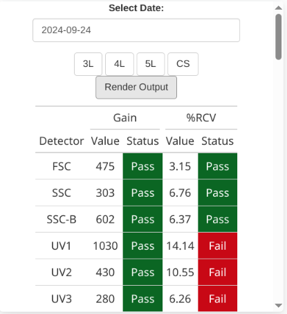
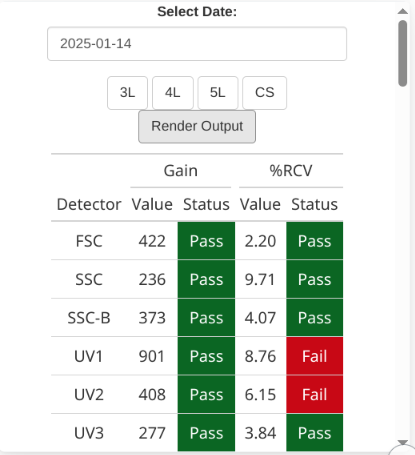
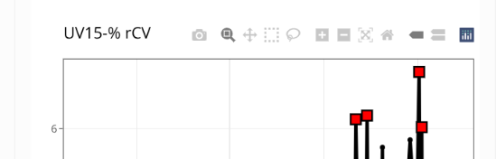

Measurement Types
MFI
During Daily QC, the spectral cytometers use QC beads to adjust the gains for individual detectors to ensure that .fcs files acquired on different days are comparable across time. To monitor these adjustments, we visualize the Median Fluorescent Intensity (MFI) values of the QC bead .fcs files that are acquired before and after running daily QC. What we normally observe resembles the following plot:
In this plot, you can notice when the instrument switched from using the Cytek QC Bead Lot 2005 to Cytek QC Bead Lot 2006. This new QC bead lot has a new setpoint MFI for each detector that the instrument accounts for. (For additional examples see the visualized differences across lots.)
On some of our instruments and detectors, we have observed there is significant drift from the setpoint of samples acquired before Daily QC has been run, which is why we encourage weekend users to run Daily QC when starting up the instrument.
Gain
Gain (similar to voltage on certain cytometers) is an unit which detected signal is amplified by for each detector. An instrument applies different gains to each detector, allowing for use of dim and bright fluorophores. During the Daily QC, these gains normally get minor adjustments to ensure the MFI of the QC beads stays constant, allowing for comparison of .fcs files acquired on different days. As the individual lasers in the cytometer are used, they slowly wear down and more gain is applied to remain at that MFI setpoint. This contributes to the slowly increasing view typical of the gain plots:
Generally, when a laser is begining to rapidly wear out, we see steeper increases in the Gain plots. When the field service engineer replaces the laser, the gain values are reset according to the new laser. In this example, you can see that pattern for the violet laser of the instrument was replaced twice (red lines indicating field service engineer visit):
For the Cytek instruments, a Daily QC fail is triggered when the Gain is >100% of the original baseline Gain value. When this happens, a red flag is added to that timepoint. We have observed that .fcs files acquired on gain spike days (as seen below) may still have altered unmixing even if they have not exceeded the >100% threshold, so it’s worth keeping an eye on.

%rCV
The robust coefficient of variation (rCV) is a measure of the resolution between the positive and negative population for each detector. When the value is high, dim staining populations may be harder to distinguish from the negative population. For spectral instruments where entire spectrum is used to identify a fluorophore, increased rCV on the detector where a fluorophore has its main peak has impacted unmixing for users with larger panels (>20 fluorophores). The RCV plots will typically resemble the following:
For Cytek instruments, a Daily QC fail is only triggered when %rCV exceeds either 8% for SSC, or 6% for FSC and the following detectors: UV3, V3, B3, YG3, R3. When this happens, the instrument will appear as failed on the home page:
When we navigate to the History tab and find that date, we can see that the rCV for UV3 failed, which was what triggered the QC fail:

But what happens if the RCV fails on any of the other detectors (UV1-> UV2, UV4 -> UV16,etc.)? Since they are not the indicator detectors, they won’t trigger a Cytek QC fail. However, since we have observed unmixing issues when the RCVs of these other detectors are exceeded, we don’t want to ignore them. Consequently, when a non-indicator RCV fails, we show it as failed under the Daily View:

And label the instrument as caution for that given day:
How to interpret these Caution notices depends on what we see in the Levey-Jennings plots. For a few detectors (especially UV1/UV2), they exceed the 6% cutoff but are stable over time. Consequently, the impact of the increased RCV is relatively minimal.
By contrast, is the RCV went from consistently stable, to spiking, the impact on your unmixing is likely to be significantly greater.
Interactive Levey-Jennings Plots
For each spectral instruments, the interactive plots are laid out in three columns (MFI, Gain, %rCV), with tabs for each of the lasers on that instrument. Additional parameters (Scatter, LaserPower, LaserDelay, LaserAreaScaling) may appear if they are recorded by that instrument.
When a QC fail occurs for a given parameter, it appears as a red box on that individual date.
By default, the interactive plots display a year of QC data for that instrument when available. You can hover over the upper right of the plot to access additional options to select, scroll, zoom in and save an individual plot as a .png on your computer.

Data
All data that was derived for use in the interactive dashboards for the individual instuments is available for download under the Data tab on the upper right of the page.
Gain and %rCV links to .csv file containing those types of data.
MFI links to .csv file containing the data derrived from the before and after QC Bead .fcs files.
Both the above can be used if you want to plot the data yourself using a different ggplot2 color-scheme in R than the one we have selected. Additionally, data for timepoints older than the current year can be found here.
Plots is a .pdf containing static versions of all the interactive plots (MFI, Gain, %rCV) that are visible for the Levey-Jennings Plots for the individual instrument. QC fails appear as red squares, and vertical red dashed lines correspond to dates the field service engineer was on site for repairs or preventative maintenance.